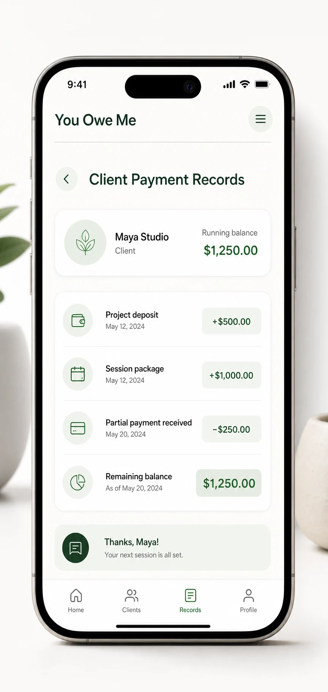
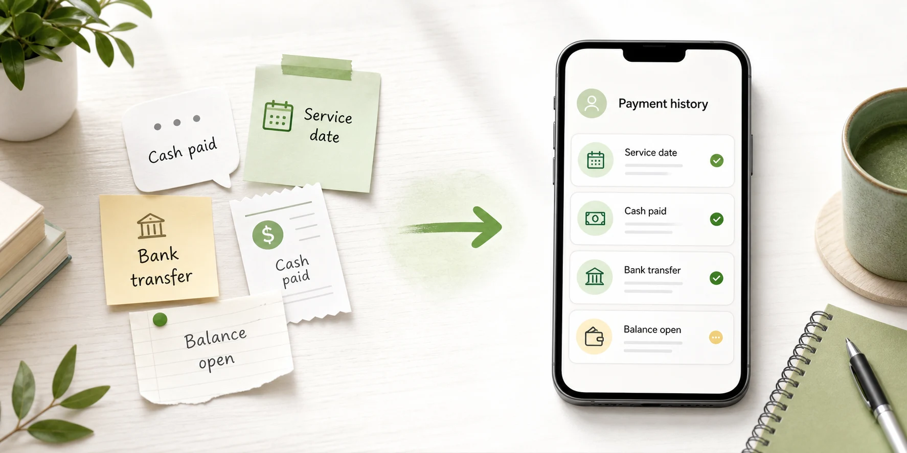
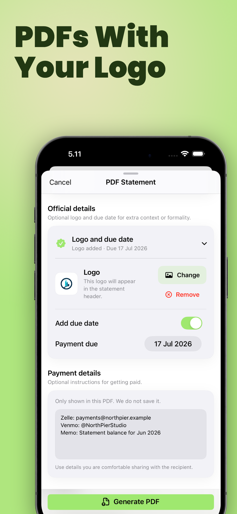
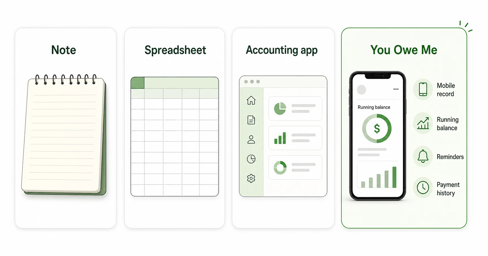

Client payment records
Simple Client Payment Records
Track what a client owes, what they already paid, and what is still open — without turning a simple payment record into a full accounting system.
Client payments can become hard to follow when there are deposits, partial payments, repeat services, cash payments, old messages, and balances that stay open for weeks. You Owe Me gives each client one clear running history so you can see what happened, what was paid, and what still needs to be settled.
You Owe Me is not accounting software, invoicing software, tax software, payment processing, or debt collection. It is a private record app for simple balances and payment history between people.
For the data side of client balances, PDF statements, exports, reminders, and App Lock, read Privacy and Data in You Owe Me.
Works offline • No mandatory sign-up • Face ID / Touch ID lock

What is a client payment record?
A client payment record is a simple history of what a client was charged, what they paid, when they paid it, and what balance is still open. It can include deposits, partial payments, cash payments, repeat service charges, notes, reminders, and receipt-style confirmations.
If an extra amount has already been agreed, YouOweMe can record it as percentage interest that grows over time or as one fixed interest amount added once. It keeps the private balance clear; it is not a replacement for formal invoices, contracts, accounting, tax, or legal advice.
If the situation is one original client amount with deposits or partial payments, the Partial Repayment Calculator can calculate what remains before you create a longer client record.
For one invoice or one payment, a message or note may be enough. But when payments happen in steps, work repeats, or the balance stays open, a dedicated record helps prevent confusion later.
For broader IOUs, informal loans, and personal balances, see the App to Track Money Owed solution. Client payment records are the narrower work-payment version of that same money-between-people problem.
- Client name
- Service, project, or reason
- Original amount
- Deposit or upfront payment
- Partial payments
- Dates
- Remaining balance
- Optional agreed interest or extra amount
- Due date or check-in date
- Notes about what was included
- Confirmation or receipt sent
Who simple client payment records are for
Freelancers
Track deposits, milestone payments, final balances, and payment notes for small projects without building a complex system.
Tutors and private teachers
Keep lesson packages, weekly sessions, missed payments, and monthly payments clear for each student or family.
Small service providers
Record cash payments, repeat work, parts deposits, labor charges, and balances that are paid later.
Coaches and consultants
Track session packages, retainers, partial payments, and what is still open after each check-in.
Informal lender or balance records
Keep simple records when money is lent, advanced, or repaid in a work-related context. The record stays factual, not legal or collection-focused.
Anyone paid outside a full accounting system
Use a clear private record when the relationship is real, the balance matters, and old messages are not enough.
Why client payments get hard to track
Most client payment confusion does not come from bad intentions. It comes from small details living in different places: a text message, a bank transfer, a cash payment, a note, a receipt, and your memory.
If you only need to reconstruct the current amount from a few charges and payments, start with the Running Balance Calculator.
Deposits and final payments split the balance
A client pays part now and the rest later. A few weeks later, it is easy to forget the exact remaining amount.
Repeat work creates a running balance
Lessons, sessions, service visits, or recurring work can keep adding new amounts before the old balance is fully paid.
Cash and transfers do not explain the context
A payment may show that money arrived, but not what it covered or what still remains.
Messages get buried
Chats are useful for conversation, but they rarely give one clean answer to “what is still open?”
Spreadsheets require discipline
A spreadsheet can work, but it is easy to forget updates when you are moving between clients, messages, and real work.
Follow-ups are easier when the record is clear
A factual balance makes a payment reminder calmer and less personal: here is what was charged, what was paid, and what remains.

What You Owe Me is — and what it is not
You Owe Me helps with
- Simple client balances
- Deposits and upfront payments
- Partial payments
- Running payment history
- Notes for what each amount covered
- Reminders and check-ins
- Receipt-style repayment confirmations
- PDF statements or summaries with selected records, due dates, optional logo/image branding, and payment details
- One record per client or person
- Private mobile tracking
You Owe Me does not replace
- Accounting software
- Invoicing software
- Formal invoices
- Tax preparation
- Legal contracts
- Bookkeeping advice
- Payment processing
- Payroll
- Debt collection
- CRM systems
- Professional financial advice
Use You Owe Me when you need a lightweight record of client payments and balances. Use accounting or invoicing software when you need formal invoices, taxes, business reports, bank reconciliation, payroll, or accountant-ready bookkeeping. To see the broader product surface, explore the features that support client payment records.
How You Owe Me keeps client payment records clear
Create one record for the client
Keep each client’s charges, payments, notes, and balance in one place instead of mixing them with messages and memory.
Add charges when work happens
Record a lesson package, project milestone, service visit, repair charge, parts cost, deposit, or other client-related amount.
Record every payment received
Add deposits, partial payments, cash payments, transfers, or final payments as they happen so the balance changes automatically.
Keep notes with the payment
Add what the payment covered, which session or project it relates to, or what still needs to be confirmed.
Use reminders for follow-ups
Set a reminder for the next payment, due date, monthly check-in, or follow-up without carrying it in your head. When the reminder belongs to a client balance, the follow-up starts from what is still open, not from memory.
Share a summary when needed
When a client needs context, send a clean summary or statement instead of rebuilding the history from old messages.
Confirm payments clearly
Use receipt-style confirmations to make it clear what was paid, what it covered, and whether anything remains open.
Create client-facing PDF statements when a simple record needs to look clearer
Sometimes a client does not need a full invoice or accounting report. They just need a clear summary of what was recorded, what was paid, what remains open, and when the next payment is expected.
You Owe Me can help turn a simple client balance into a more polished PDF statement or summary. This is useful when you want the record to feel clearer than a chat message, but you still do not need a full accounting or invoicing system.
Choose the records to include
Create a PDF from the relevant entries instead of sending screenshots or rebuilding the history manually.
Add a due date
Include a payment due date or next check-in date when timing matters for the remaining balance.
Add your logo or image
Use optional logo or image branding when the summary should feel easier to recognize or more professional for a client.
Include payment details
Add payment details when the client needs to know how the remaining amount should be paid.
Keep it tied to the real history
The PDF summary comes from the records you keep in the app, so it stays grounded in the actual charges, payments, notes, and balance history.

A You Owe Me PDF statement is a clear payment record or summary. It is not a formal invoice, tax document, legal contract, accounting report, or payment-processing tool.
Client payment records in real life
Concrete ledgers make the current balance easier to explain without searching through old messages.
Tutor with weekly lessons
A tutor teaches four weekly lessons at $40 each. The family pays $80 now and the rest at the end of the month.
- Week 1 lesson: +$40
- Week 2 lesson: +$40
- Payment received: -$80
- Week 3 lesson: +$40
- Week 4 lesson: +$40
- Remaining balance: $80
Takeaway: The tutor can see the current balance without checking every message.
Freelancer with deposit and final payment
A freelancer agrees on a $600 project. The client pays a $200 deposit, then a $250 milestone payment. The final balance is still open.
For a one-time version of this calculation, use the Partial Repayment Calculator.
- Project total: +$600
- Deposit received: -$200
- Milestone payment: -$250
- Remaining balance: $150
Takeaway: The record makes the final payment easy to explain.
Service provider with parts and labor
A repair worker buys parts first, then adds labor after the job is finished. The client pays part in cash and the rest later.
- Parts: +$75
- Labor: +$120
- Cash payment: -$100
- Remaining balance: $95
Takeaway: The record shows what was included, not just what was paid.
Coach or consultant with a session package
A coach sells a five-session package for $500. The client pays $250 upfront and $250 after the third session.
- Package: +$500
- Upfront payment: -$250
- Second payment: -$250
- Remaining balance: $0
Takeaway: The history still matters after the balance reaches zero because it confirms the package was paid.
If the remaining amount needs to be paid in weekly, biweekly, or monthly steps, use the Payment Plan Calculator before tracking the real payments.
When a note, spreadsheet, accounting app, or You Owe Me makes sense
This is not a one-tool-fits-every-situation problem. The right system depends on how often the balance changes and how formal the record needs to be.
If you are deciding whether a spreadsheet is enough, compare spreadsheet tracking with app-based balance tracking.
A note is enough when
- One client
- One payment
- No future balance
- No reminders needed
- No partial payments
- No need to share a summary
A spreadsheet is enough when
- You like manual tracking
- You review balances at a desk
- The format is stable
- You do not need mobile reminders
- You are comfortable maintaining formulas
Accounting software is better when
- You need formal invoices
- You need tax reports
- You need bookkeeping
- You need payment processing
- You need accountant-ready records
- You manage a larger business
You Owe Me helps when
- You need a quick mobile record
- You track payment history by person or client
- Payments happen in parts
- A client balance stays open
- You need reminders
- You want a simple summary
- You do not want a full accounting setup

What to track for each client
The record does not need to be complicated. The goal is to make the current balance and history easy to understand later.
A practical client payment checklist
- Client name
- Service, project, package, or reason
- Date work was done or money was added
- Amount charged
- Deposit received
- Partial payment received
- Payment method note, such as cash, bank transfer, or other
- What the payment covered
- Remaining balance
- Next payment date or check-in date
- Notes, attachments, or receipt reference if available
- Whether a summary or confirmation was already sent
Simple payment confirmation messages
Use factual, calm wording when you need to confirm a deposit, partial payment, balance summary, follow-up, or paid-in-full status.
If you need to calculate the remaining balance before confirming the payment, use the Partial Repayment Calculator first.
If the client already paid and you only need a confirmation message, use the Repayment Receipt Generator.
Features that matter for simple client payment records
- Client need: I need to know what this client still owes How You Owe Me helps: One running balance per client
- Client need: They paid a deposit first How You Owe Me helps: Record deposits and remaining balances
- Client need: They paid part of it How You Owe Me helps: Partial payment history
- Client need: This client pays every month How You Owe Me helps: Recurring entries and reminders
- Client need: I need to remember what the payment covered How You Owe Me helps: Notes on each entry
- Client need: I need to confirm payment clearly How You Owe Me helps: Receipt-style summaries
- Client need: I need to share the balance or send a clearer client summary How You Owe Me helps: Live Link or PDF statements with selected records, due dates, optional logo/image branding, and payment details
- Client need: I want the record private How You Owe Me helps: Offline use and Face ID / Touch ID lock
Used for clear records beyond personal IOUs
You Owe Me is already used by people who need clearer records for lending, business, daily financial logs, and balances they rely on later.
Clear lender records
“Everything a lender needs to keep clear records.”
Business and lending use
“Whether you’re lending or running a business. Simple, user-friendly, and it gets the job done.”
Daily financial logs
“My go-to app for a year now for daily financial logs.”
Short excerpts from App Store reviews already featured on the reviews page. Want proof from real users first? Read You Owe Me reviews.
Keep client balances clear in You Owe Me
Use You Owe Me when client payments happen in steps, balances stay open, or you need a quick record you can check before sending a follow-up.
Best for simple client balances, deposits, partial payments, reminders, and payment history.
Simple and private by design
Private record
Keep your own client payment history without forcing the client into a new system.
No mandatory account for basic tracking
Use You Owe Me as a simple private record when you do not need a heavy business platform.
Works offline
Add a payment note or balance update even when you are away from your desk.
Protected access
Use Face ID or Touch ID lock for extra privacy on your phone.
No payment processing
The app tracks what happened. It does not move money, charge cards, or process client payments.
Frequently asked questions
Is You Owe Me accounting software?
No. You Owe Me is not accounting software, bookkeeping software, tax software, or invoicing software. It is a simple record app for tracking balances, payments, notes, reminders, and payment history between people.
Can I use You Owe Me for client payments?
Yes, if you need a lightweight record of what a client was charged, what they paid, and what is still open. It can help with deposits, partial payments, recurring service charges, and simple client balances.
Can You Owe Me send invoices?
No. You Owe Me is not an invoicing platform and does not replace accounting software. You can use it to create clear PDF statements or payment summaries from your records, including details such as selected entries, due dates, logo/image branding, and payment details if supported by the app. Use invoicing or accounting software when you need formal invoices, tax records, bookkeeping, or payment processing.
Can I send a PDF statement to a client?
Yes. You can use You Owe Me to create a clear PDF statement or summary from the records you keep, so a client can see what was charged, what was paid, what remains open, and any due date or payment details you include. It is a record summary, not a formal invoice or accounting document.
Can I track partial client payments?
Yes. You can record each payment as it happens so the remaining balance stays clear.
Can I track cash payments?
Yes. You can record a cash payment and add a note explaining what it covered, when it was received, and whether anything remains open.
Does the client need to install the app?
No. One person can keep the record. If you need to share context, use the available sharing or summary options supported by the app.
Is this good for freelancers?
Yes, for simple freelance payment records such as deposits, milestone payments, final balances, and follow-up reminders. For formal invoicing, taxes, or bookkeeping, use dedicated accounting software.
Can I use it for recurring clients?
Yes. You Owe Me can help when the same client has repeat sessions, recurring charges, monthly payments, or an open balance that changes over time.
Is this a debt collection app?
No. You Owe Me does not collect debt, enforce repayment, process payments, or provide legal services. It helps you keep a private, clear record of money between people.
When is a spreadsheet better?
A spreadsheet may be better if you want manual reports, formulas, or desk-based tracking. You Owe Me is better when you want a quick mobile record, reminders, payment history, and one visible balance per client.
Track client payments without making the system heavier than the work
When you only need a clear record of what was charged, what was paid, and what remains open, You Owe Me keeps each client balance simple. Use it for deposits, partial payments, recurring charges, reminders, clean payment history, and client-facing PDF summaries — without turning a small record into a full accounting setup.
Not accounting software • Not invoicing software • Not payment processing • Simple records for money between people
New to the app? Start with the Quick Start guide.
Updated